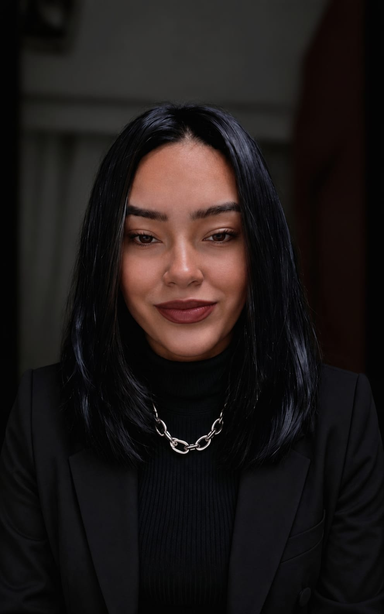

Conhecimentos
- HTML, CSS e JavaScript
- Informática e Pacote Office
- Excel básico
- Canva e criação visual
- Redes sociais e comunicação digital
- Conhecimento básico em análise de dados
Estou construindo minha trajetória em tecnologia com foco em desenvolvimento, organização, comunicação e aprendizado contínuo. Busco minha primeira oportunidade na área para crescer profissionalmente, colaborar com projetos reais e transformar ideias em soluções.

Tenho interesse em tecnologia, inovação e desenvolvimento de software. Gosto de ambientes que exigem organização, boa comunicação, resolução de problemas e evolução constante. Estou construindo minha base técnica com foco em front-end, lógica de programação e uso estratégico de ferramentas digitais.
Conquistar uma oportunidade de estágio ou posição júnior na área de tecnologia para aplicar meus conhecimentos, aprender com profissionais experientes e contribuir com projetos reais, crescendo profissionalmente dentro da área.
Universidade Cruzeiro do Sul — São Paulo
CursandoFormação complementar voltada para uso estratégico de IA, prompts e produtividade digital.
Base educacional concluída, com foco em disciplina, organização e desenvolvimento contínuo.
Estou aberta a oportunidades de estágio, posição júnior, networking e projetos onde eu possa aprender, evoluir e contribuir com dedicação.